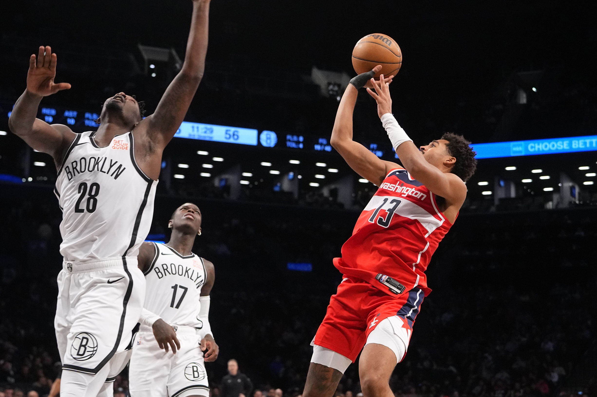

The Washington Wizards are on fire, and at the heart of their incredible 15-game win streak is none other than Jordan Poole. The dynamic guard has been a revelation this season, averaging an astounding 35 points and 8 assists during the streak.
Poole’s blend of electrifying offense, clutch performances, and infectious energy has transformed the Wizards into a formidable team that’s taking the league by storm. With each passing game, fans grow louder, chanting “Poole Party” as he dazzles on the court.
Much of the Wizards’ success can be attributed to Poole’s ability to control the pace of the game. His lethal shooting from beyond the arc has stretched defenses to their limits, while his creative playmaking has elevated his teammates’ performances.
Kyle Kuzma has thrived alongside Poole, benefiting from the countless open looks generated by Poole’s gravity. Even role players like Corey Kispert and Alex Sarr have stepped up, feeding off Poole’s relentless confidence and unselfish style of play.
This synergy has transformed the Wizards into one of the most exciting teams to watch this season.
A Spark of Hope for the Franchise and Fans
Off the court, Poole’s charisma has galvanized both the team and the city. He’s become a symbol of hope for a franchise seeking a resurgence, and his impact is felt far beyond the stat sheet.
“Jordan’s leadership and love for the game are contagious,” said Wizards head coach Brian Keefe. “He’s brought a spark to this team that we haven’t seen in years.”
With the playoffs now firmly in sight, the Wizards faithful are dreaming big. As long as Jordan Poole is leading the charge, the possibilities seem endless.
Clutch Gene Activated: Poole Delivers in Crunch Time
 Poole hits yet another clutch jumpshot as if it were nothing.What sets Jordan Poole apart during this remarkable stretch is his ability to thrive under pressure. Time and again, he has delivered in clutch moments, sinking game-winning shots and making pivotal plays when the Wizards needed him most. Whether it’s a deep three-pointer with seconds left on the clock or a dazzling drive to the rim in overtime, Poole has become the team’s go-to closer.
“He lives for those moments,” said teammate Kyle Kuzma. “When the game’s on the line, there’s no one else we want with the ball.” His fearlessness in crunch time has not only secured victories but also cemented his role as the Wizards’ undisputed leader on the court.